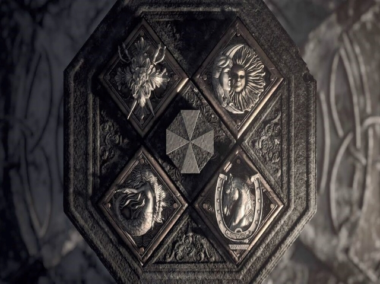

Four houses, each with their own puzzles.
How will your group of four strategize to solve all of them within the hour?
You and your group need to explore the entire island.
This will require teamwork and time management.